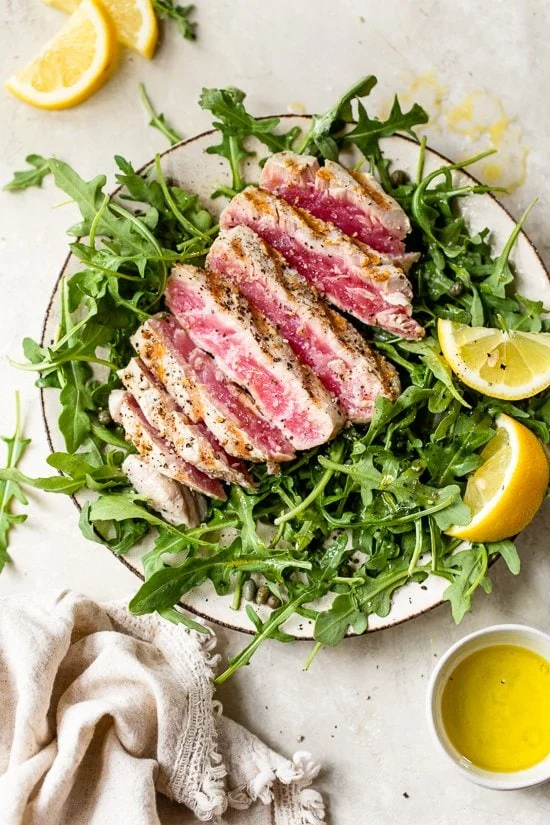

Grilled Tuna Over Argula, Lemon Vinaigrette

Description
Lemony, zesty, tuna goodness. This meal has minimal prep and cook time making for an easy to process very healthy lunch.
Ingredients
- 5 oz sashimi tuna, sushi grade
- 1 tsp extra virgin olive oil
- 1 tsp fresh lemon juice
- 1 tsp capers
- kosher salt and fresh pepper
- 2 cups baby arugula
Steps
- Season tuna with kosher salt and fresh cracked pepper.
- Place arugula and capers on a plate. Combine oil and lemon juice, salt and pepper.
- Heat your grill or grill pan to high heat and clean grate well.
- When grill is hot, spray grate with oil to prevent sticking then place tuna on the grill; cook one minute without moving.
- Turn over and cook an additional 1 minute; remove from heat and set aside on a plate.
- Slice tuna on the diagonal and place on top of salad. Top with lemon vinaigrette and eat immediately.